Amendment #245 (S.O. 1194(E), 1999)
11 changes: 0 to the First Schedule, 11 to the Second Schedule. 10 applied1 not applied
What it did to the ministries
The order, page by page
Page 1 of 18
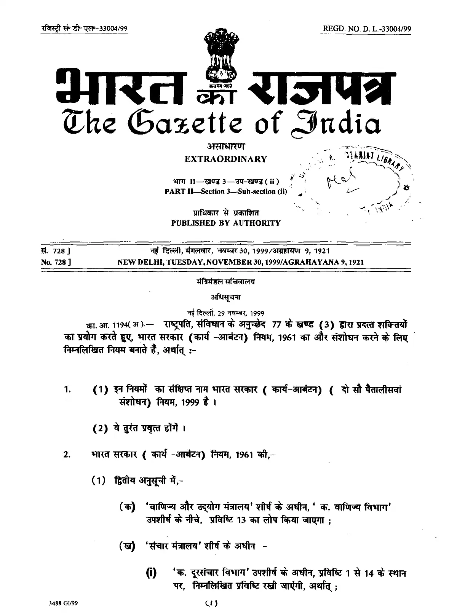
Page 2 of 18
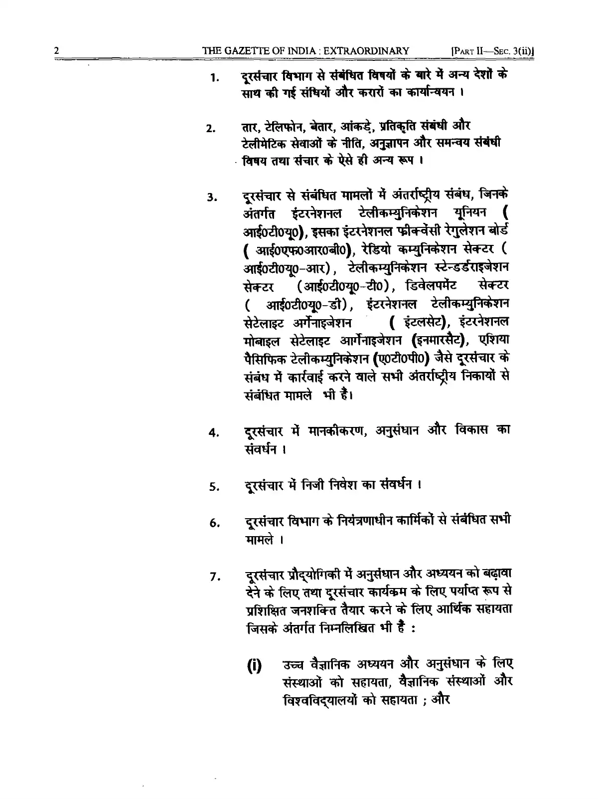
Page 3 of 18
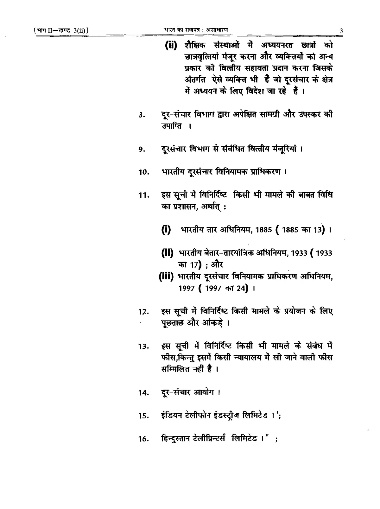
Page 4 of 18
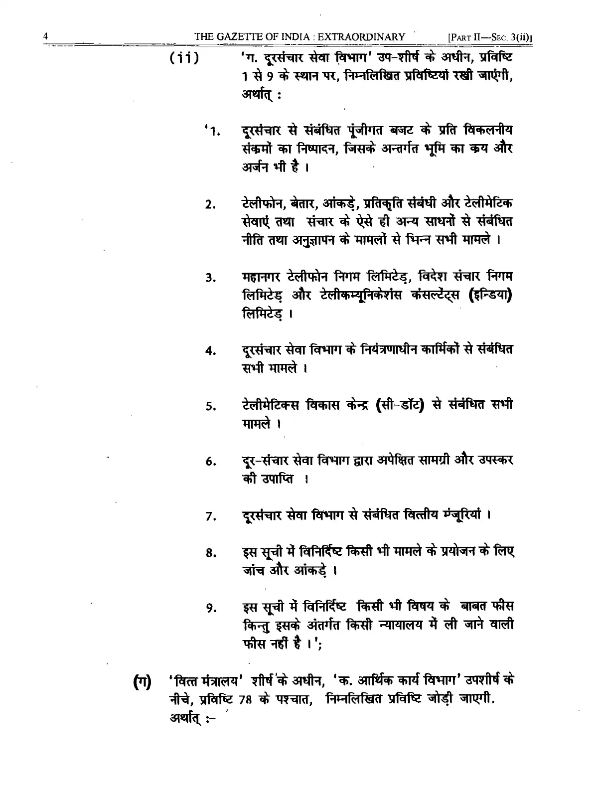
Page 5 of 18
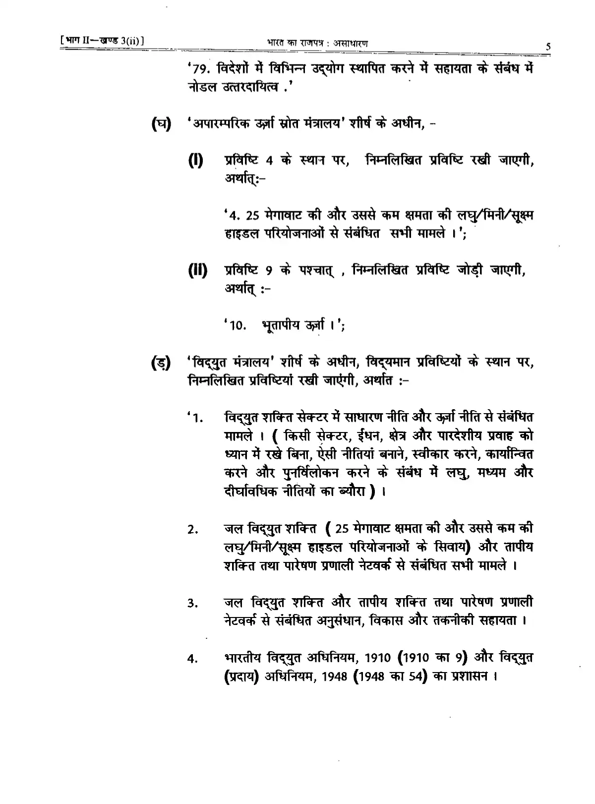
Page 6 of 18
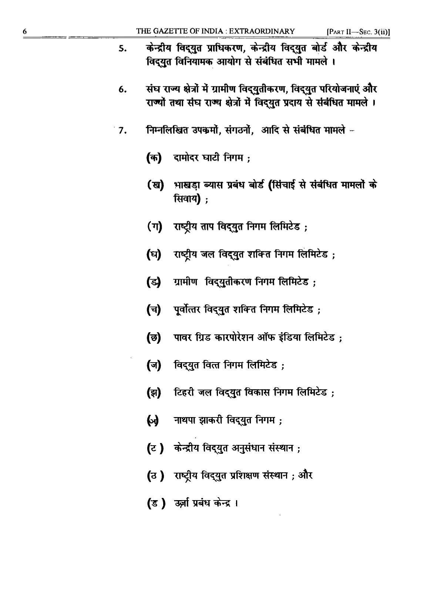
Page 7 of 18
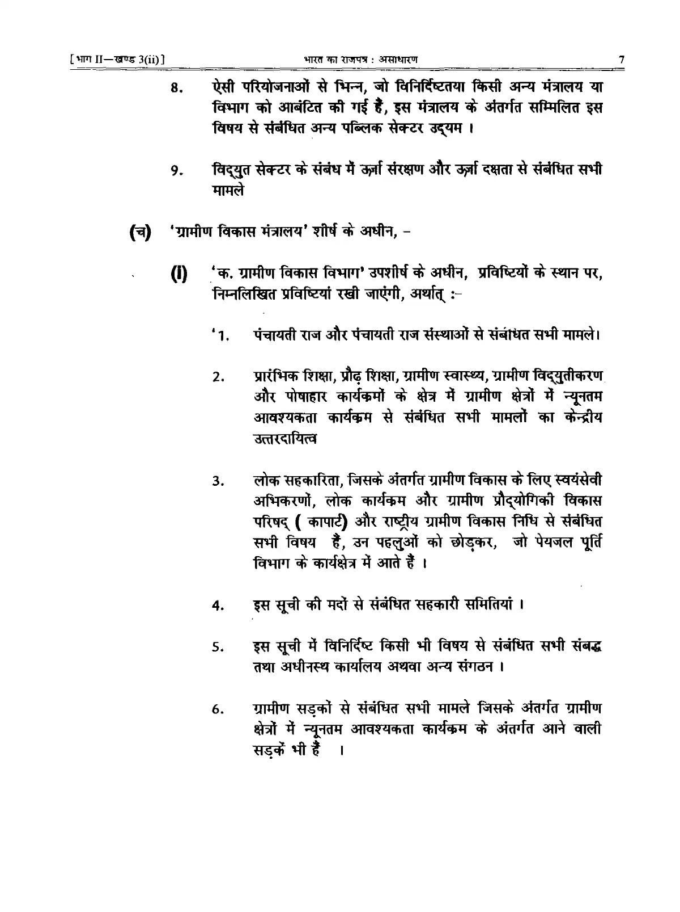
Page 8 of 18
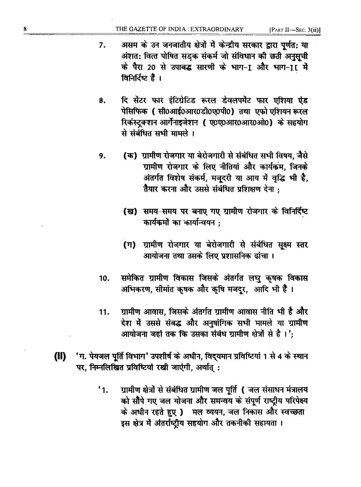
Page 9 of 18
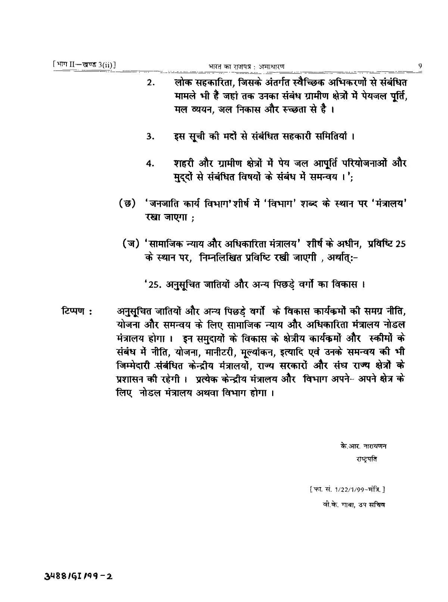
Page 10 of 18
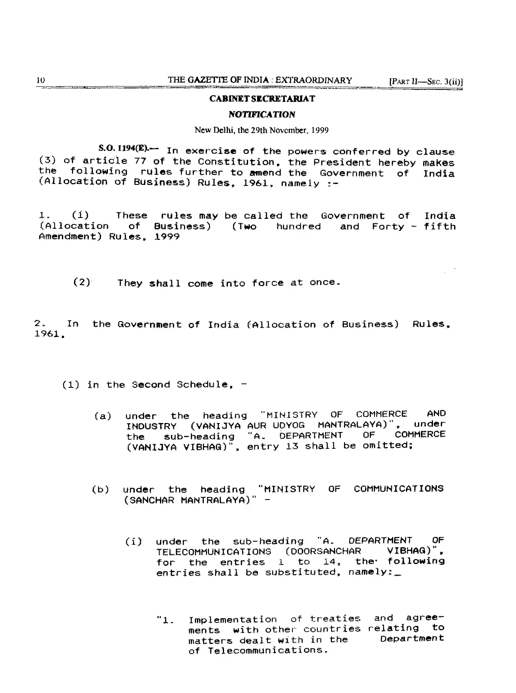
12Schedule 2 › MINISTRY OF COMMERCE AND INDUSTRY › DEPARTMENT OF COMMERCE › entry 13
applied at schedule 2 › ministry MINISTRY OF COMMERCE AND INDUSTRY › department A › group_heading IV › entry 13 in the Rules after #245
Schedule 2 › MINISTRY OF COMMUNICATIONS › DEPARTMENT OF TELECOMMUNICATIONS › entry
- 1. Implementation of treaties and agreements with other countries relating to matters dealt with in the Department of Telecommunications.
- 2. Policy, Licensing and Coordination matters relating to telegraphs, telephones, wireless, data, facsimile and telematic services and other like forms of communications.
- 3. International relations in matters connected with telecommunications including matters relating to all international bodies dealing with telecommunications such as International Telecommunication Union (ITU), its International Frequency Regulation Board (IFRB), Radio Communication Sector (ITU-R),…
- 4. Promotion of standardization, research and development in telecommunications.
- 5. Promotion of private investment in Tele communications.
- 6. All matters relating to personnel under the control of the Department of Telecommunications.
and 15 more
- 7. Financial assistance for the furtherance of research and study in telecommunications technology and for building up adequately trained manpower for telecom programme, including-
- i. assistance to institutions assistance to scientific institutions and to universities for advanced scientific study and research; and
- ii. grant of scholarships to students in educational institutions and other forms of financial aid to aid individuals including those going abroad for studies in the field of telecommunications.
- 8. Procurement of stores and equipment required by the Department of Telecommunications.
- 9. Financial sanctions relating to the Department of Telecommunications.
- 10. Telecom Regulatory Authority of India.
- 11. Administration of laws with respect to any of the matters specified in this list, namely:-
- i. The Indian Telegraph Act, 1885 (13 of 1885)
- ii. The Indian Wireless Telegraphy Act 1933 (17 of 1933); and
- iii. The Telecom Regulatory Authority of India Act, 1997 (24 of 1997).
- 12. Enquiries and statistics for purpose of any of the matters specified in this list.
- 13. Fees in respect of any of the matters specified in this list, but not including fees taken in any court.
- 14. Telecom Commission.
- 15. Indian Telephone Industries Limited.
- 16. Hindustan Teleprinters Limited.
applied at schedule 2 › ministry MINISTRY OF COMMUNICATIONS › department A › entry 1 in the Rules after #245
read page break
Page 11 of 18
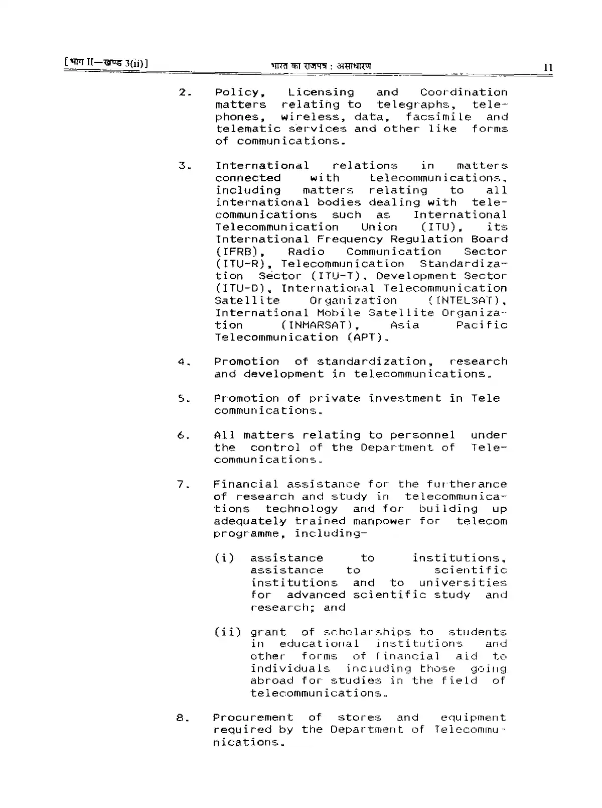
Page 12 of 18
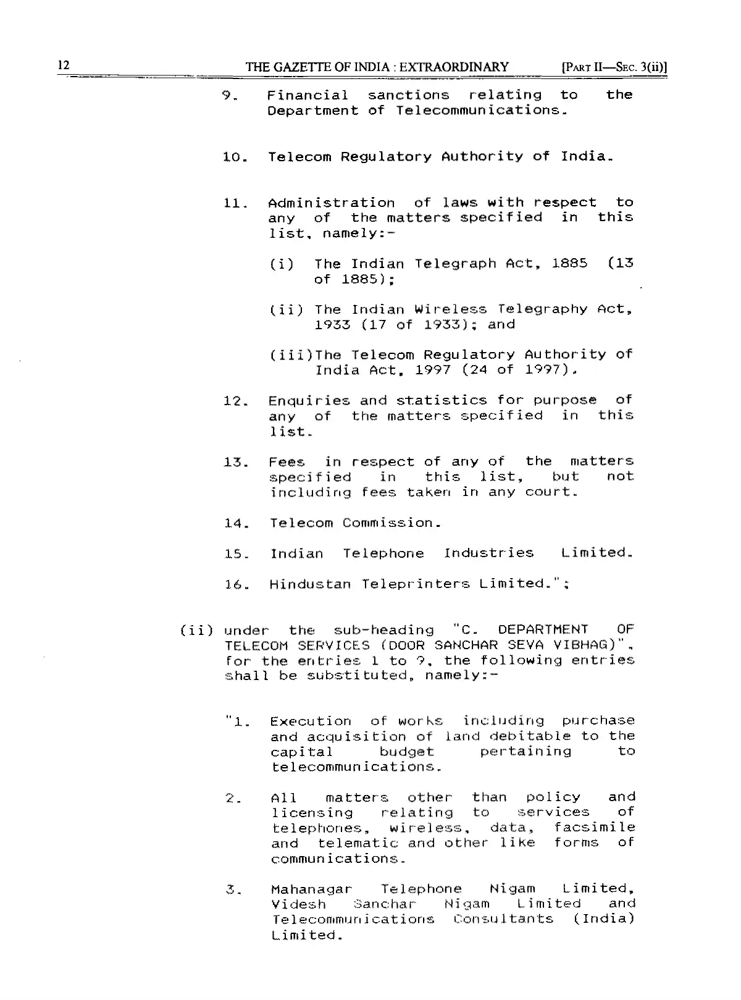
3Schedule 2 › MINISTRY OF COMMUNICATIONS › DEPARTMENT OF TELECOM SERVICES › entry
- 1. Execution of works including purchase and acquisition of land debitable to the capital budget pertaining to telecommunications.
- 2. All matters other than policy and licensing relating to services of telephones, wireless, data, facsimile and telematic and other like forms of communications.
- 3. Mahanagar Telephone Nigam Limited Videsh Sanchar Nigam Limited and Telecommunications Consultants (India) Limited. A - All matters relating to personnel under the control of the Department of Telecom Services.
- 5. All matters relating to Centre for Development of Telematics (C-DOT).
- 6. Procurement of stores and equipment required by the Department of Telecom Services.
- 7. Financial sanctions relating to the Department of Telecom Services.
and 2 more
- 8. Enquiries and statistics for purpose of any of the matters specified in this list.
- 9. Fees in respect of any of the matters specified in this list, but not including fees taken in any court.
applied at schedule 2 › ministry MINISTRY OF COMMUNICATIONS › department C › entry 1 in the Rules after #245
read page break
Page 13 of 18
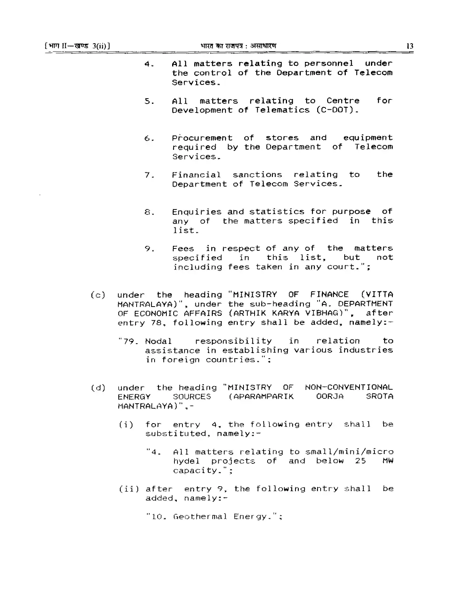
456after Schedule 2 › MINISTRY OF FINANCE › DEPARTMENT OF ECONOMIC AFFAIRS › entry 78
- 79. Nodal responsibility in relation to assistance in establishing various industries in foreign countries.
applied at schedule 2 › ministry MINISTRY OF FINANCE › department A › group_heading IX › entry 79 in the Rules after #245
Schedule 2 › MINISTRY OF NON-CONVENTIONAL ENERGY SOURCES › entry 4
- 4. All matters relating to small/mini/micro hydel projects of and below 25 MW capacity.
applied at schedule 2 › ministry MINISTRY OF NON-CONVENTIONAL ENERGY SOURCES (APARAM- PARIK OORJA SROTA MANTRA- LAYA) › entry 4 in the Rules after #245
after Schedule 2 › MINISTRY OF NON-CONVENTIONAL ENERGY SOURCES › entry 9
- 10. Geothermal Energy.
applied at schedule 2 › ministry MINISTRY OF NON-CONVENTIONAL ENERGY SOURCES (APARAM- PARIK OORJA SROTA MANTRA- LAYA) › entry 10 in the Rules after #245
Page 14 of 18
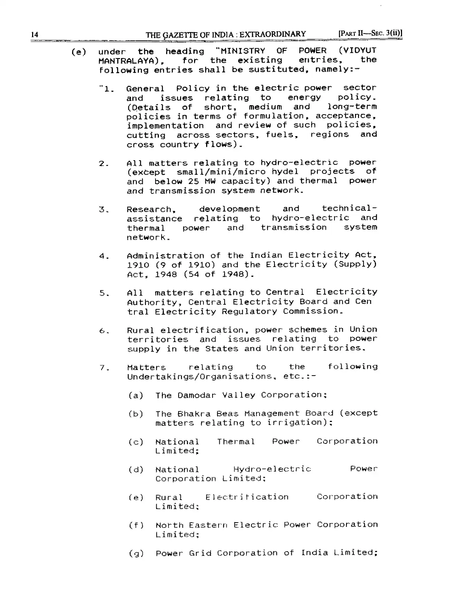
7Schedule 2 › MINISTRY OF POWER
- 1. General Policy in the electric power sector and issues relating to energy policy. (Details of short, medium and long-term policies in terms of formulation, acceptance implementation and review of such policies cutting across sectors, fuels, regions and cross country flows).
- 2. All matters relating to hydro-electric power (except small/mini/micro hydel projects of and below 25 MW capacity) and thermal power and transmission system network.
- 3. Research development and technicalassistance relating to hydro-electric and thermal power and transmission system network.
- 4. Administration of the Indian Electricity Act 1910 (9 of 1910) and the Electricity (Supply) Act, 1948 (54 of 1948).
- 5. All matters relating to Central Electricity Authority, Central Electricity Board and Cen tral Electricity Regulatory Commission.
- 6. Rural electrification, power schemes in Union territories and issues relating to power supply in the States and Union territories.
and 15 more
- 7. Matters relating to the following Undertakings/Organisations, etc.:-
- a. The Damodar Valley Corporation:
- b. The Bhakra Beas Management Board (except matters relating to irrigation)
- c. National Thermal Power Corporation Limited
- d. National Hydro-electric Power Corporation Limited:
- e. Rural Electrification Corporation Limited:
- f. North Eastern Electric Power Corporation Limited
- g. Power Grid Corporation of India Limited
- h. Power Finance Corporation Limited
- i. Tehri Hydro Development Corporation
- j. Nathpa Jhakri Power Corporation
- k. Central Power Research Institute%3 (1) National Power Training Institute:
- m. Energy Management Centre.
- 8. Other Public Sector Enterprises concerned with the subject included under this Ministry except such projects as are specifically allotted to any other Ministry or Department.
- 9. All matters concerning energy conservation and energy etficiency pertaining to Power Sector.
applied at schedule 2 › ministry MINISTRY OF POWER in the Rules after #245
read page break
Page 15 of 18
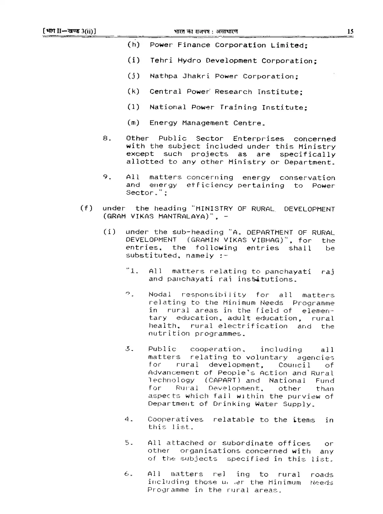
8Schedule 2 › MINISTRY OF RURAL. DEVELOPMENT › DEPARTMENT OF RURAL DEVELOPMENT
- 1. All matters relating to panchayati raj and panchayati rai institutions. Nodal responsibility for all matters relating to the Minimum Needs Programme in rural areas in the field of elemen tary education, adult education, rural health, rural electrification and the nutrition programmes.
- 3. Public cooperation, including all matters relating to voluntary agencies for rural development, Council of Advancement of People's Action and Rural Technology (CAPART) and National Fund for Rural Development, other than aspects which fall within the purview of Department of Drinking Water Supply.…
- 5. All attached or subordinate offices or other organisations concerned with any of the subjects specified in this list. É „ All matters rel ing to rural roads including those un ver the Minimum N e e d s Programme in the rural areas.
- 7. Road works financed in whole or part by the Central Government in tribal areas of Assam specified in Part I and Part II of the Table appended to paragraph 20 of the Sixth Schedule to the Constitution.
- 8. All matters relating to cooperation with the Centre for Integrated Rural Development for Asia and Pacific (CIRDAP) and the Afro-Asian Rural Reconstruction Organisation (AARRO).
- 9.
and 5 more
- a. All matters pertaining to rural employment or unemployment such as working out of strategies and programmes for rural employment including special works, wage or income generation and training related thereto
- b. Implementation of the specific programmes of rural employment evolved from time to time.
- c. Micro level planning related to rural employment or unemployment and administrative infrastructure therefor.
- 10. Integrated rural development including small farmers development agency. marginal farmers and agricultural labourers, etc.
- 11. Rural housing including Rural Housing Policy and all matters germane and incidental thereto under country or rural planning, in so far as it relates to rural areas.
applied at schedule 2 › ministry MINISTRY OF RURAL DEVELOPMENT › department A in the Rules after #245
read page break
Page 16 of 18
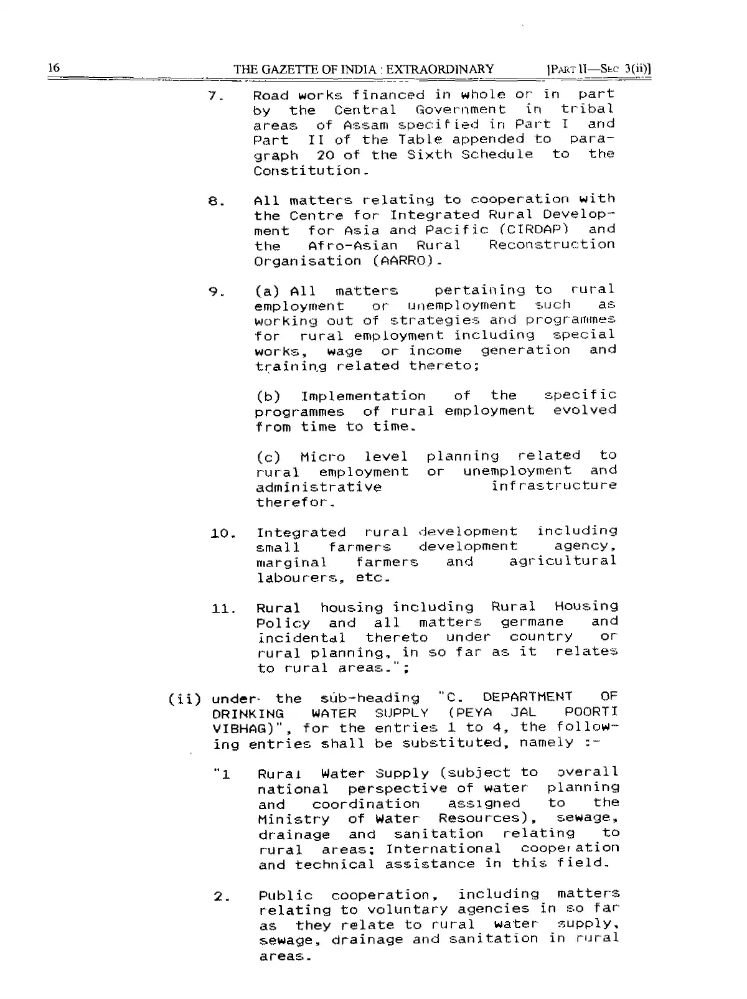
9Schedule 2 › MINISTRY OF RURAL. DEVELOPMENT › DEPARTMENT OF DRINKING WATER SUPPLY › entry
- 1 Rural Water Supply (subject to overall national perspective of water planning and coordination assigned to the Ministry of water Resources), sewage drainage and sanitation relating to rural areas; International cooperation and technical assistance in this field.
- 2. Public cooperation, including matters relating to voluntary agencies in so far as they relate to rural water supply. sewage, drainage and sanitation in rural areas.
- 3. Co-operatives relatable to the items in this list. A- Coordination with respect to matters relating to drinking water supply projects and issues which cover both .. urban and rural areas.
applied at schedule 2 › ministry MINISTRY OF RURAL DEVELOPMENT › department C › entry 1 in the Rules after #245
read page break
Page 17 of 18
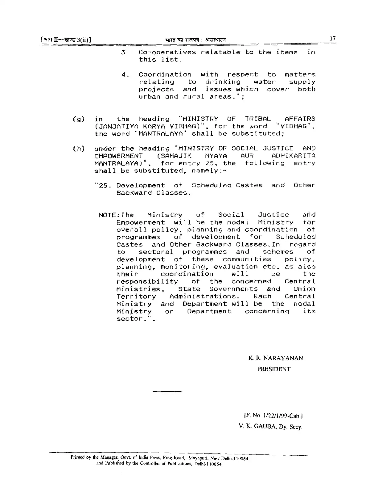
1011Schedule 2 › MINISTRY OF TRIBAL AFFAIRS
for “VIBHAG” read “MANTRALAYA”
not applied (the change could not be placed in the Rules as read; see How this document was read)
Schedule 2 › MINISTRY OF SOCIAL JUSTICE AND EMPOWERMENT › entry 25
- 25. Development of Scheduled Castes and Other Backward Classes.
- NOTE: The Ministry of Social Justice and Empowerment will be the nodal Ministry for overall policy, planning and coordination of programmes of development for Scheduled Castes and Other Backward Classes. In regard to sectoral programmes and schemes of development of these communities policy…
applied at schedule 2 › ministry MINISTRY OF SOCIAL JUSTICE AND EMPOWERMENT › part IV › entry 25 in the Rules after #245
Page 18 of 18
How this document was read
Known issues
| Change | Issue | Known as |
|---|---|---|
| 10 | change 10: the words to substitute are not in schedule 2 › ministry MINISTRY OF TRIBAL AFFAIRS | Words that differ |
From the Government of India (Allocation of Business) Rules, 1961 and their amendments, as published by the Cabinet Secretariat (cabsec.gov.in), read by orgpedia. The readings of the older scanned gazettes have known gaps.